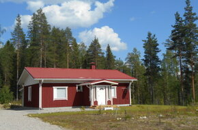

Коттедж

Коттедж "Переделкино" размером 94 м2, расположен на берегу озера, в лесу.
В нашем доме Вам будет удобно и комфортно, предлагаем воспользоваться им для проведения спокойного семейного отдыха в любое время года!
Вы обязательно оцените уютную атмосферу дома, его удобное расположение. "Переделкино" находится в 9 км. от г. Костомукша в частном секторе, что гарантирует комфортное пребывание тем, кто предпочитает спокойный семейный отдых.
Мы рады приветствовать у нас в "Переделкино" не только граждан России, но и граждан из других стран. Удобное расположение дома недалеко от МАПП Люття-Вартиус, который открыт с 7-30 до 21-30 часов ежедневно, делает это место остановки и отдыха удобным для транзитного транспорта и пассажиров (25 км от границы Финляндии).
Рекомендуется на 4 человека.
В доме имеется:
- 2 спальни (11,2 м2) + (14,35 м2)
- просторная кухня
- большая гостинная с камином
- отдельный туалет
- душевая
- сауна
- гардеробная
- парковка для личного транспорта с подогревом зимой
Оснащение:
Холодильник, эл.плита с духовкой, микроволновая печь, телевизор, интернет, отопление, посуда, утюг, фен.
Отдалённость от озера 30 м, на которое открывается прекрасный вид из окон дома.
Летом предлагаем катание на лодке, рыбную ловлю на озере, отдых на природе, сбор в лесу даров природы, зимой пешие прогулки на лыжах, посещение достопримечательностей г. Костомукша и окрестностей.
Более подробную информацию Вы можете узнать, связавшись с нами.